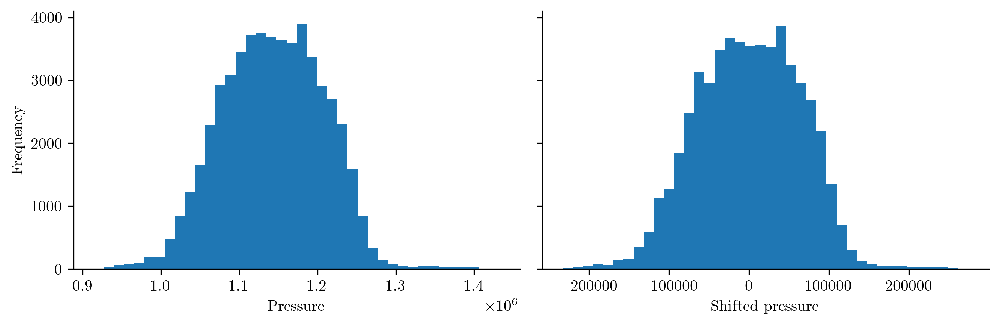

Preprocessing Data#
Raw dynamical systems data often need to be lightly preprocessed before use in Operator Inference.
This page introduces tools in the opinf.pre submodule for preprocessing data.
We show examples of
centering or shifting to account for boundary conditions, and
scaling / nondimensionalizing the variables represented in the state.
In this guide, we use \(\mathbf{s}(t)\) to denote the unprocessed state variable for which we have data \(\mathbf{s}_{j} = \mathbf{s}(t_{j})\), \(j=0, \ldots, k-1\). We use \(\mathbf{q}(t)\) to denote the processed state variable which we will use for Operator Inference.
Shifting / Centering#
A common first preprocessing step is to shift the training snapshots by some reference snapshot \(\bar{\mathbf{s}}\), i.e.,
For example, the reference snapshot could be chosen to be the average of the training snapshots:
In this case, the transformed snapshots \(\mathbf{q}_{j} = \mathbf{s}_{j} - \bar{\mathbf{s}}\) are centered around \(\mathbf{0}\).
This type of transformation can be accomplished using opinf.pre.shift() or the class opinf.pre.SnapshotTransformer.
Note
The following code uses data pulled from the combustion problem described in [SKHW20]. The data consists of nine variables recorded at 100 points in time.
Snapshot Variables
Pressure \(p\)
\(x\)-velocity \(v_{x}\)
\(y\)-velocity \(v_{y}\)
Temperature \(T\)
Specific volume \(\xi\)
Chemical species molar concentrations for CH\(_{4}\), O\(_{2}\), CO\(_{2}\), and H\(_{2}\)O.
The dimension of the spatial discretization in the full example in [SKHW20] is \(38{,}523\) per variable, so that \(\mathbf{s}(t)\) has dimension \(346{,}707\). Here we have downsampled the state dimension to \(535\) for each variable for demonstration purposes.
You can download the data here to repeat the experiments.
import numpy as np
import scipy.linalg as la
import matplotlib.pyplot as plt
import opinf
Show code cell content
# Matplotlib customizations.
plt.rc("axes.spines", right=False, top=False)
plt.rc("figure", dpi=300, figsize=(9, 3))
plt.rc("font", family="serif")
plt.rc("legend", edgecolor="none", frameon=False)
plt.rc("text", usetex=True)
# Load snapshot data and extract just the pressure variable.
snapshots = np.load("data_scaling_example.npy")
pressure = np.split(snapshots, 9, axis=0)[0]
# Shift the pressure snapshots by the average pressure snapshot.
pressure_shifted, reference_snapshot = opinf.pre.shift(pressure)
# Average pressure value.
np.mean(pressure)
1143160.4356617983
# Average shifted pressure value.
np.mean(pressure_shifted)
-3.3880122632623834e-12
# Plot the distribution of the entries of the raw and processed states.
fig, axes = plt.subplots(1, 2, sharey=True)
axes[0].hist(pressure.flatten(), bins=40)
axes[1].hist(pressure_shifted.flatten(), bins=40)
axes[0].set_ylabel("Frequency")
axes[0].set_xlabel("Pressure")
axes[1].set_xlabel("Shifted pressure")
fig.tight_layout()
plt.show()

The reference snapshot may also represent boundary conditions or other physical constraints. See [SMPW19] for examples.
Scaling#
Many engineering problems feature multiple variables with ranges across different scales. For such cases, it is often beneficial to scale the variables to similar ranges so that one variable does not overwhelm the other in the operator learning.
A simple scaling is given by
where \(\alpha\) is chosen by examining the range of the training data. For example, after centering the data, a scaling to \([-1, 1]\) is given by
where \(\tilde{s}_{ij}\) is the \(i\)th entry of \(\mathbf{s}_{j} - \bar{\mathbf{s}}\).
Use opinf.pre.scale() or the class opinf.pre.SnapshotTransformer for this type of transformation.
# Extract the H2O molar concentration.
water = np.split(snapshots, 9, axis=0)[-1]
# Compare the scales of the variables.
print(f"Pressure range (raw):\t\t[{pressure.min():.2e}, {pressure.max():.2e}]")
print(f"Pressure range (shifted):\t[{pressure_shifted.min():.2e}, {pressure_shifted.max():.2e}]")
print(f"Water range:\t\t\t[{water.min():.2e}, {water.max():.2e}]")
Pressure range (raw): [9.14e+05, 1.43e+06]
Pressure range (shifted): [-2.33e+05, 2.74e+05]
Water range: [0.00e+00, 7.70e-03]
# Apply a min-max scaling to [0, .01] on the shifted pressure snapshots.
pressure_scaled, pscale1, pscale2 = opinf.pre.scale(
pressure_shifted,
(0, 1e-2),
)
# Compare the scales of the variables.
print(f"Pressure range (raw):\t\t[{pressure.min():.2e}, {pressure.max():.2e}]")
print(f"Pressure range (shifted):\t[{pressure_shifted.min():.2e}, {pressure_shifted.max():.2e}]")
print(f"Pressure range (scaled):\t[{pressure_scaled.min():.2e}, {pressure_scaled.max():.2e}]")
print(f"Water range:\t\t\t[{water.min():.2e}, {water.max():.2e}]")
Pressure range (raw): [9.14e+05, 1.43e+06]
Pressure range (shifted): [-2.33e+05, 2.74e+05]
Pressure range (scaled): [0.00e+00, 1.00e-02]
Water range: [0.00e+00, 7.70e-03]
Transformer Classes#
opinf.pre.SnapshotTransformer bundles shifting and scaling transformations and their inverses.
st = opinf.pre.SnapshotTransformer(center=True, scaling="standard", verbose=True)
pressure_preprocessed = st.fit_transform(pressure)
Learned mean centering Q -> Q' and standard scaling Q' -> Q''
| min | mean | max | std
----|------------|------------|------------|------------
Q | 9.141e+05 | 1.143e+06 | 1.432e+06 | 6.470e+04
Q' | -2.332e+05 | -3.388e-12 | 2.743e+05 | 6.461e+04
Q'' | -3.610e+00 | -3.393e-17 | 4.246e+00 | 1.000e+00
st = opinf.pre.SnapshotTransformer(scaling="maxabssym", byrow=True, verbose=True).fit(pressure)
Learned maxabssym scaling Q -> Q''
| min | mean | max | std
----|------------|------------|------------|------------
Q | 9.141e+05 | 1.143e+06 | 1.432e+06 | 6.470e+04
Q'' | -1.000e+00 | -6.757e-18 | 1.000e+00 | 4.916e-01
The constructor accepts arguments to set the type of shifting / scaling transformation.
opinf.pre.SnapshotTransformer.fit() and opinf.pre.SnapshotTransformer.fit_transform() methods learn the particular transformation, and opinf.pre.SnapshotTransformer.fit_transform() or opinf.pre.SnapshotTransformer.transform() applies the learned transformation.
Finally, opinf.pre.SnapshotTransformer.inverse_transform() method applies the inverse of the learned transformation.
Multivariable Data#
For systems where the full state consists of several variables (pressure, velocity, temperature, etc.), it may not be appropriate to apply the same scaling to each variable.
The opinf.pre.SnapshotTransformerMulti class handles multivariable data by constructing a separate opinf.pre.SnapshotTransformer instance for each variable.
The constructor accepts the number of snapshot variables and the same parameters as the constructor of opinf.pre.SnapshotTransformer.
# Learn the variable transformation used in the paper.
stm = opinf.pre.SnapshotTransformerMulti(
9,
center=(True, False, False, True, False, False, False, False, False),
scaling=(
"maxabs",
"maxabs",
"maxabs",
"maxabs",
None,
None,
None,
None,
None,
),
variable_names=["p", "vx", "vy", "T", "xi", "CH4", "O2", "CO2", "H2O"],
verbose=True,
)
snapshots_preprocessed = stm.fit_transform(snapshots)
p:
Learned mean centering Q -> Q' and maxabs scaling Q' -> Q''
| min | mean | max | std
----|------------|------------|------------|------------
Q | 9.141e+05 | 1.143e+06 | 1.432e+06 | 6.470e+04
Q' | -2.332e+05 | -3.388e-12 | 2.743e+05 | 6.461e+04
Q'' | -8.503e-01 | -1.243e-17 | 1.000e+00 | 2.355e-01
vx:
Learned maxabs scaling Q -> Q''
| min | mean | max | std
----|------------|------------|------------|------------
Q | -3.194e+02 | 7.419e+01 | 3.127e+02 | 5.663e+01
Q'' | -1.000e+00 | 2.323e-01 | 9.791e-01 | 1.773e-01
vy:
Learned maxabs scaling Q -> Q''
| min | mean | max | std
----|------------|------------|------------|------------
Q | -2.048e+02 | 1.487e+00 | 1.341e+02 | 1.970e+01
Q'' | -1.000e+00 | 7.259e-03 | 6.545e-01 | 9.618e-02
T:
Learned mean centering Q -> Q' and maxabs scaling Q' -> Q''
| min | mean | max | std
----|------------|------------|------------|------------
Q | 2.670e+02 | 9.724e+02 | 2.742e+03 | 5.765e+02
Q' | -1.306e+03 | -2.380e-15 | 1.722e+03 | 4.329e+02
Q'' | -7.586e-01 | -1.378e-18 | 1.000e+00 | 2.513e-01
xi:
No transformation learned
| min | mean | max | std
----|------------|------------|------------|------------
Q | 1.064e-01 | 3.350e-01 | 1.017e+00 | 2.018e-01
CH4:
No transformation learned
| min | mean | max | std
----|------------|------------|------------|------------
Q | 0.000e+00 | 3.511e-02 | 5.861e-01 | 9.908e-02
O2:
No transformation learned
| min | mean | max | std
----|------------|------------|------------|------------
Q | 0.000e+00 | 3.845e-02 | 6.603e-02 | 2.267e-02
CO2:
No transformation learned
| min | mean | max | std
----|------------|------------|------------|------------
Q | 0.000e+00 | 1.043e-01 | 1.598e-01 | 4.223e-02
H2O:
No transformation learned
| min | mean | max | std
----|------------|------------|------------|------------
Q | 0.000e+00 | 1.649e-03 | 7.705e-03 | 2.339e-03
Choosing an advantageous preprocessing \(\mathbf{s}(t) \mapsto \mathbf{q}(t)\) is highly problem dependent, and the tools shown here are not the only ways to preprocess snapshot data. See, for example, [IK22] for a compelling application of Operator Inference to solar wind streams in which preprocessing plays a vital role.